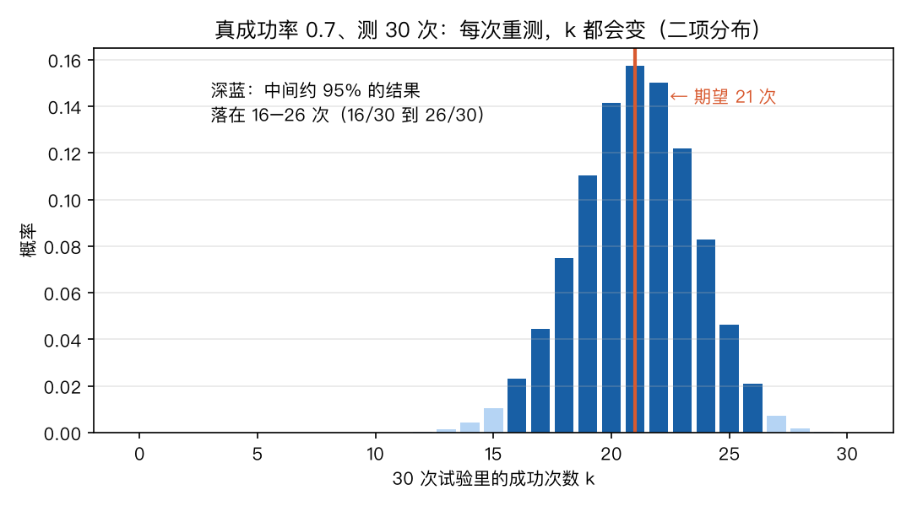
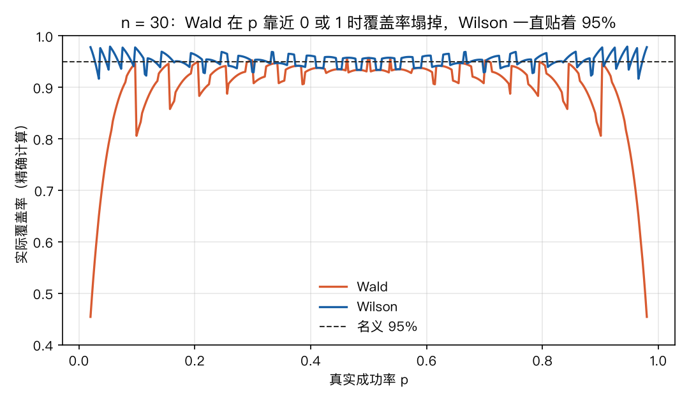
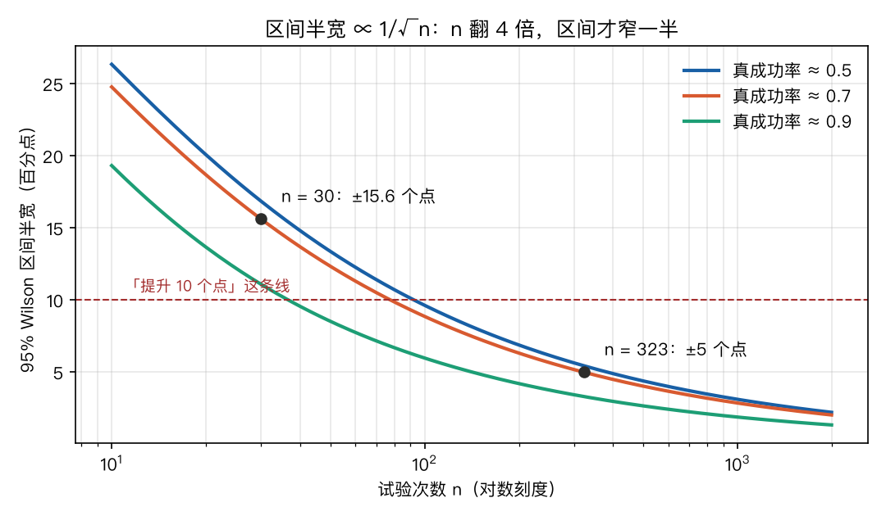

第 1 章 · 一个成功率有多准：30 次试验里成了 21 次，真实水平在哪
本地运行
git clone https://github.com/wikieden/math-and-eval-stats
cd math-and-eval-stats/code/notebooks
pip install jupyterlab torch numpy
jupyter lab ch01_success_rate_ci.ipynb也可以下载后直接用 VS Code 打开 .ipynb 运行。需要 GPU 的章节在 Colab 里选「代码执行程序 → 更改运行时类型 → GPU」。
本章回答：团队说"新模型成功率 70%（21/30）"。这个 70% 有多可信？真实成功率可能低到多少、高到多少？要把误差缩到 ±5 个点，得测多少次？
讲解日期：2026-11-23 · 上一章：无（本书第 1 章） · 下一章：第 2 章 两个成功率比一比
对应原文：NIST e-Handbook §7.2.4.1materials/text/web/nist/prc241.txtL22–L60（Wilson 区间公式）；Miller《Adding Error Bars to Evals》§2.1materials/text/papers/adding-error-bars-to-evals-2411.00640.txtL91–L141（伯努利标准误、95% 区间）；Kress-Gazit 等《Robot Learning as an Empirical Science》§6.4.2materials/text/papers/robot-eval-best-practices-2409.09491.txtL593–L596（13/20 对 14/20 分不出高下）
本章缩写：CI = Confidence Interval（置信 / 区间）；SE = Standard Error（标准 / 误差）；CLT = Central Limit Theorem（中心 / 极限 / 定理）；NIST = National Institute of Standards and Technology（美国国家 / 标准 / 与技术 / 研究院）；p̂ 读作"p hat"（p 戴帽子，表示"估计出来的 p"）。全部缩写见 附录 · 缩写与术语表
讲解
第一步：成功率是"估计"，不是"真值"（2026-11-23）
类比：尝一勺汤判断整锅咸淡。 整锅汤的咸度是固定的（真值），但你每次舀一勺尝到的都略有不同。勺子越小，尝到的越不准。机器人测 30 次，就是从"无穷多次可能的试验"这锅汤里舀了 30 勺。
把每次试验看成抛一枚不均匀的硬币：成功的概率是 \(p\)（真实成功率，谁也不知道），失败的概率是 \(1-p\)。测 \(n\) 次，成功了 \(k\) 次。
- \(p\)：真实成功率，固定但未知。
- \(\hat p\)：读作"p hat"，从这 \(n\) 次里估计出来的成功率。
- \(k\)：成功次数。如果每次试验互相独立、\(p\) 不变，\(k\) 服从二项分布 \(\text{Binomial}(n, p)\)（n 次、每次成功概率 p 的"数成功次数"分布）。
例子：21/30，\(\hat p = 0.70\)。但真实的 \(p\) 完全可能是 0.6，运气好测出了 21 次；也可能是 0.8，运气差只测出 21 次。

图 1-1 · 真成功率 0.7 时重测 30 次，成功次数大多落在 16 到 26 之间。21/30 只是其中一次的结果。
一句话：报告里的 70% 是一勺汤的味道，不是整锅的咸度；下面几步就是算"整锅可能在哪个范围"。
第二步：标准误和最朴素的区间（Wald 区间）（2026-11-23）
类比：同一个实验重做一遍，数字会晃多少。 标准误就是"晃动幅度"的尺子。
- \(SE\)：Standard Error，标准误。意思是：如果把"测 n 次"这件事重做很多遍，每遍得到的 \(\hat p\) 会围着真值上下晃，晃动的标准差大约就是 SE。
- \(\hat p(1-\hat p)\)：单次试验（成 = 1、败 = 0）的方差。\(\hat p\) 在 0.5 时最大（0.25），靠近 0 或 1 时变小。
- 除以 \(n\) 再开方：试验次数越多，平均值晃得越少，按 \(1/\sqrt n\) 缩。
根据中心极限定理（CLT：很多独立小随机量加起来近似正态分布），\(\hat p\) 近似服从正态分布，于是得到教科书上最常见的 95% 区间（Wald 区间，以统计学家 Abraham Wald 命名）：
1.96 是标准正态分布中间 95% 面积的边界：左右各留 2.5%。
Miller 的评测报告里就是这两个公式：伯努利情形 \(SE=\sqrt{\bar s(1-\bar s)/n}\)（L130–L131），95% 区间 \(\bar s \pm 1.96\times SE\)（L141）。
例子（21/30）：
| 量 | 算式 | 结果 |
|---|---|---|
| \(\hat p\) | 21 / 30 | 0.70 |
| \(SE\) | \(\sqrt{0.7 \times 0.3 / 30} = \sqrt{0.007}\) | 0.0837 |
| 半宽 | \(1.96 \times 0.0837\) | 0.164 |
| Wald 95% CI | \(0.70 \pm 0.164\) | [0.536, 0.864] |
也就是说："70%"背后的真实成功率，从 54% 到 86% 都说得通。 区间宽 33 个点。
一句话：30 次试验的成功率，误差大约是 ±16 个点；比"提升 10 个点"还大。
第三步：Wald 区间什么时候坏掉，换 Wilson 区间（2026-11-23）
Wald 的毛病：它用估计值 \(\hat p\) 去算误差。\(\hat p\) 靠近 0 或 1 时，误差被算得太小。最极端的例子：
| 结果 | Wald 区间 | 问题 |
|---|---|---|
| 30/30 | \(1.0 \pm 1.96 \times \sqrt{1\times 0/30}\) = [1.000, 1.000] | 宽度 0，等于说"真实成功率一定是 100%"，荒谬 |
机器人评测里，成功率 90% 以上、试验次数 20–50 次的情形非常常见，恰好是 Wald 最不靠谱的区域。
Wilson 区间（Wilson 1927 年提出；NIST 手册推荐它，L22–L27）：
- \(z\)：95% 区间取 1.96，\(z^2 \approx 3.84\)。
- 中心：分子多了 \(z^2/2n\)，分母多了 \(z^2/n\)，效果是把中心往 0.5 拉一点。相当于在 n 次试验之外，假装多做了约 \(z^2 \approx 4\) 次、一半成一半败。
- 半宽：根号里多了 \(z^2/4n^2\)，所以 \(\hat p = 0\) 或 1 时宽度也不会变成 0。
NIST 原文说 Wilson 区间是对假设检验"反解"出来的（L22–L27 "based on inverting the hypothesis test"）：所有"不会被 21/30 这个结果拒绝"的 \(p\) 值，组成区间。这个思路第 2 章讲检验时会再用。
例子：
| 结果 | 中心 | 半宽 | Wilson 95% CI | 对比 Wald |
|---|---|---|---|---|
| 21/30 | \((0.7 + 3.84/60) / (1 + 3.84/30) = 0.677\) | 0.156 | [0.521, 0.833] | [0.536, 0.864]：Wilson 整体往下挪了一点 |
| 30/30 | 0.943 | 0.057 | [0.886, 1.000] | [1.000, 1.000]：Wilson 承认真实成功率可能只有 89% |

图 1-2 · n = 30 时，按二项分布精确算出每个真成功率下两种区间的覆盖率。Wald 在两端掉到 50% 以下；Wilson 一直在 95% 附近（锯齿来自二项分布是离散的）。
一句话：小样本、成功率靠近 0 或 1 时一律用 Wilson；报告写"21/30 = 70%，95% Wilson CI [52%, 83%]"。
场景代码：真实项目里不用手算，scipy 和 statsmodels 都有现成函数。注意 scipy 默认是精确的 Clopper-Pearson 区间（更保守、更宽），要 Wilson 得显式指定：
from scipy.stats import binomtest
from statsmodels.stats.proportion import proportion_confint
ci = binomtest(k=21, n=30).proportion_ci(confidence_level=0.95, method="wilson")
print(ci) # ConfidenceInterval(low=0.521..., high=0.833...) ← 第三步的 Wilson 区间
print(binomtest(21, 30).proportion_ci()) # 默认 method="exact"：[0.506, 0.853]，Clopper-Pearson，比 Wilson 宽
print(proportion_confint(21, 30, alpha=0.05, method="wilson")) # statsmodels 同一个结果
print(proportion_confint(21, 30, alpha=0.05, method="normal")) # 这就是 Wald：[0.536, 0.864]
评测脚本里通常把它包进汇报表：每个任务一行，列"成功 / 总数、成功率、Wilson 下界、Wilson 上界"。GR00T 2 第 6 章的真机结果就是这样报的：每柱 50 次，画 95% Wilson 区间。
第四步：要多少次试验，区间才够窄（2026-11-23）
类比：拍照的曝光时间。 想让画面噪点减半，曝光时间要翻 4 倍，不是翻 2 倍。区间宽度也一样，按 \(1/\sqrt n\) 缩。
把 Wald 半宽公式反过来解 \(n\)：
- \(h\)：想要的半宽（比如 0.05 = ±5 个点）。
- \(p\)：预计的成功率（不知道时取 0.5，最保守）。
例子（\(p \approx 0.7\)，Wilson 半宽）：
| n | 10 | 30 | 100 | 300 | 1000 |
|---|---|---|---|---|---|
| 半宽（个点） | ±24.8 | ±15.6 | ±8.8 | ±5.2 | ±2.8 |
想要 ±5 个点：\(n \approx 1.96^2 \times 0.7 \times 0.3 / 0.05^2 = 3.84 \times 0.21 / 0.0025 \approx 323\) 次。

图 1-3 · 95% Wilson 区间半宽随 n 变化（对数横轴）。成功率 0.7 时，30 次是 ±15.6 个点；要到 ±5 个点得 323 次。红虚线是"提升 10 个点"：n = 30 时，单个成功率的误差就已经比它大。
注意：这里算的是单个成功率的精度。"新旧两个模型差多少"是两个成功率相减，误差更大；"要测多少次才分得出 10 个点的差距"要用功效分析，第 3 章讲。
一句话：区间半宽 ∝ \(1/\sqrt n\)；30 次只能看出 ±15 个点量级的东西。
第五步：95% 到底指什么（2026-11-23）
最常见的误读："真实成功率有 95% 的概率落在 [0.52, 0.83] 里。"在经典（频率学派）统计里，真值 \(p\) 是固定的，不是随机的；随机的是区间。
正确的说法：如果把"测 30 次、算一个区间"这件事重复很多遍，大约 95% 的区间会盖住真值。这个比例叫覆盖率（coverage）。"95%"是方法的性质，不是某一个区间的性质。
例子（模拟，编的真值）：设真成功率 \(p = 0.9\)，每轮测 30 次，重复 20000 轮，数区间盖住 0.9 的比例：
| 方法 | 名义 | 实际覆盖率 |
|---|---|---|
| Wald | 95% | 0.809 |
| Wilson | 95% | 0.974 |
Wald 说自己是 95% 区间，实际只有约 81% 的时候是对的。这正是第三步说的"\(\hat p\) 靠近 1 时区间太窄"。
想要"真值落在区间里的概率"这种说法，要用贝叶斯后验（Beta 分布）的可信区间，第 5 章讲；Kress-Gazit 等的机器人评测指南就是用均匀先验下的 Beta 后验判断 13/20 和 14/20 分不出高下（L593–L596）。
一句话：95% 是"这套方法长期来看 95% 的时候对"，不是"这一个区间 95% 对"。
动画演示：重复做实验，数有几个区间盖住真值

可交互版：animations/01-ci-coverage.html（滑块：真成功率 p、每轮试验次数 n）
怎么看： 1. 蓝色虚线是真值 \(p\)；每一行是一轮"测 n 次"，黑点是这轮的估计值 \(\hat p\)（第一步）。 2. 每行画出这一轮的区间，左边 Wald、右边 Wilson，用的是同一批结果（第二、三步）。 3. 绿色 = 盖住真值，红色 = 没盖住。下面的覆盖率就是第五步表里的数：p = 0.9、n = 30 时，Wald 明显低于 95%（红条多是右端点贴在 1.0 上的那些行）。 4. 把 n 拖到 300：区间变窄（第四步），两种方法的覆盖率都接近 95%。
练习与作答记录
题 1（第二、三步）：旧模型是 18/30。（a）手算它的 Wald 95% 区间；（b）用 Wilson 公式算（可以用代码核对）；（c）和 21/30 的 Wilson 区间 [0.521, 0.833] 放在一起看，你对"提升 10 个点"的第一反应是什么？
作答：（待作答）
题 2（第三步）：同事报告某抓取任务"20/20，成功率 100%"。（a）Wald 区间是多少，为什么不能用；（b）你会让他报成什么样的一句话（含区间）？
作答：（待作答）
题 3（第五步）：下面两句话哪句对？（a）"真实成功率有 95% 的概率在 [0.52, 0.83] 里"；（b）"用这个方法算区间，长期来看约 95% 的区间会盖住真实成功率"。错的那句错在哪？
作答：（待作答）
题 4（第四步）：老板要求"成功率报告的误差不超过 ±3 个点"，预计成功率 80% 左右。大约要测多少次？每次 2 分钟，要多少小时？
作答：（待作答）
口诀
一勺汤不是一锅汤，七成背后正负十五；
靠零靠一 Wald 塌，Wilson 往中拉一拉；
想窄一半测四倍，九五说的是方法。
本章复习卡片
ST01–ST05（必须记住的公式和概念）。练习做完后，按答错、卡住的地方补上。
附录 · 延伸阅读
留给以后深入学习用，不影响本章主线。★ 是建议先读的。
推荐阅读
| 读什么 | 读哪里 | 读它为了什么 |
|---|---|---|
| ★ Miller《Adding Error Bars to Evals》（2024） | §2.1 L91–L145 | 评测分数的标准误怎么算、怎么在表里报（括号里写 SE，L136–L138） |
| ★ NIST/SEMATECH e-Handbook §7.2.4.1 | text/web/nist/prc241.txt L22–L80 |
Wilson 区间公式和为什么推荐它；L153 起是精确（Clopper-Pearson）区间 |
| Kress-Gazit 等《Robot Learning as an Empirical Science》（2024） | §6.4.2 L593–L596；评测建议清单 L170–L185 | 真机评测怎么设计；13/20 对 14/20 的真实案例 |
| Brown, Cai, DasGupta《Interval Estimation for a Binomial Proportion》，Statistical Science 16(2), 2001 | 全文（本地未归档） | 系统比较 Wald、Wilson、Agresti-Coull、Clopper-Pearson 的覆盖率，证明 Wald 在小样本下不可用 |
| MML（Mathematics for Machine Learning）§6.4 | text/books/mml-book.txt L10499 起 |
期望、方差、独立性；第 8 章补基础时用 |
| 《从零造 Agent Harness》第 14 章 评估 | 全章 | Agent 评测里同样的"成功率 + 标准误"问题 |
数学原理
- 二项分布：\(n\) 次独立试验、每次成功概率 \(p\)，成功次数 \(k\) 的分布。均值 \(np\)，方差 \(np(1-p)\)；所以 \(\hat p = k/n\) 的方差是 \(p(1-p)/n\)。
- 中心极限定理（CLT）：很多独立同分布的随机量求平均，平均值近似正态分布，标准差按 \(1/\sqrt n\) 缩。Wald 区间完全靠它；n 小或 p 靠边时近似变差。
- 区间 = 反解检验：Wilson 区间是"所有不会被观测结果在 5% 水平拒绝的 \(p\)"的集合。第 2 章讲检验时会正着用一次。
公式清单
| 公式 | 意思 |
|---|---|
| \(\hat p = k/n\) | 成功率的点估计 |
| \(SE = \sqrt{\hat p(1-\hat p)/n}\) | 成功率的标准误 |
| \(\hat p \pm 1.96\,SE\) | Wald 95% 区间（小样本、靠边时别用） |
| \(\dfrac{\hat p + z^2/2n \pm z\sqrt{\hat p(1-\hat p)/n + z^2/4n^2}}{1+z^2/n}\) | Wilson 区间（默认用它） |
| \(n \approx z^2 p(1-p)/h^2\) | 想要半宽 \(h\) 大约要多少次试验 |
代码对照：把本章的数字用代码算一遍
Python 标准库 + NumPy（Numerical Python：数值 / Python）+ SciPy（Scientific Python：科学 / Python）。代码在仓库本地
math-and-eval-stats/solutions/chapter-code/ch01_success_rate_ci.py，配套测试tests/test_ch01.py。Mac 上直接能跑，不需要 GPU：
bash cd math-and-eval-stats/solutions/chapter-code uv run python ch01_success_rate_ci.py # 一步一步打印 uv run pytest tests/test_ch01.py
讲义 ↔ 代码：
| 讲义 | 公式 | 写法 | 跑出来 |
|---|---|---|---|
| 第一步 | \(\hat p = k/n\) | point_estimate(21, 30) |
0.70 |
| 第二步 | \(SE\)、Wald | standard_error(21, 30)、wald_ci(21, 30) |
0.0837、[0.536, 0.864]；30/30 → [1.000, 1.000] |
| 第三步 | Wilson | wilson_ci(21, 30)、wilson_ci(30, 30) |
[0.521, 0.833]、[0.886, 1.000] |
| 第四步 | \(n \approx z^2p(1-p)/h^2\) | n_for_half_width(0.7, 0.05) |
323 |
| 第五步 | 覆盖率 | coverage(wald_ci, 0.9, 30)、coverage(wilson_ci, 0.9, 30) |
0.809、0.974 |
关键几行：
def wilson_ci(k, n, z=1.959964):
p, z2 = k / n, z * z
denom = 1 + z2 / n # 分母：1 + z²/n
center = (p + z2 / (2 * n)) / denom # 中心往 0.5 拉
half = z * math.sqrt(p * (1 - p) / n + z2 / (4 * n * n)) / denom # 多一项 z²/4n²，靠边也不为 0
return center - half, center + half
ks = rng.binomial(n, p_true, size=reps) # 覆盖率：一次抽 reps 轮实验的成功次数
代码里才看得到的 3 件事：
z用的是 1.959964 不是 1.96，所以和scipy的结果对到小数点后 6 位；讲义里四舍五入成 1.96，第三位小数不受影响。wald_ci把区间截在 [0, 1] 里（max(0, …)、min(1, …)），否则 Wald 区间会超出 100%；Wilson 天然不会出界。- 覆盖率是模拟出来的，换随机种子会在第三位小数上抖动；测试里放宽到 ±0.02。
自己改一改（不影响练习答案）：
- 把
coverage的真值改成 0.5、n 改成 30，看 Wald 和 Wilson 的差距是不是变小了。 - 把 n 改成 10、真值 0.95，看 Wald 的覆盖率能掉到多低。
- 对照 notebook，把
z换成 1.645（90% 区间），看第四步要的次数变成多少。